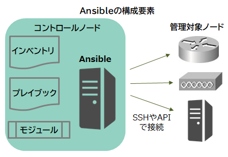
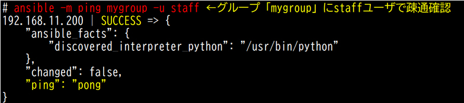
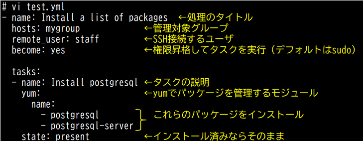
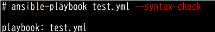
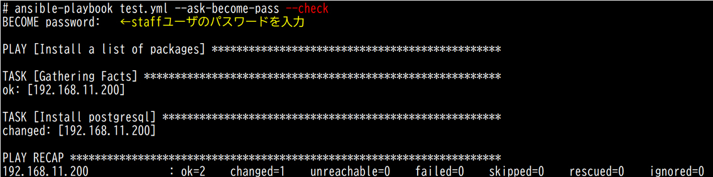
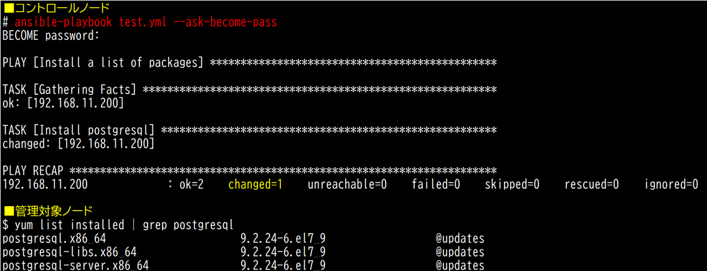

- 問題ID : 21836 システム構成ツール
- 履歴
正解
IaC
解説
インフラストラクチャ（基盤構成、ここではシステムの実行環境）をコード化する概念はInfrastructure as Code（IaC）です。
設定作業を自動化し、システム構成を管理できるシステム構成ツールで利用されています。
よって正解は
・IaC
です。
その他の選択肢については以下のとおりです。
・IaaS
サーバ、ストレージ、ネットワーク等、仮想化されたインフラストラクチャ環境をサービスとして提供する、クラウドにおけるサービスモデルなので誤りです。
・SaaS
ソフトウエアをサービスとして提供する、クラウドにおけるサービスモデルなので誤りです。
・Ansible
オープンソースのシステム構成ツールなので誤りです。
・make
Linuxで使われるコマンドラインのビルドツールなので誤りです。
参考
【システム構成ツール】
近
年、情報システムはクラウドの利用やシステムの大規模化が進んでいます。システム開発においては、開発者と運用者が連携し合うことでサービスを迅速にユー
ザに提供するというDevOpsという概念や、コンテナ技術の普及によって、開発からリリースまで短期間で行われるようになってきました。
システ
ム構築ではサーバやネットワーク機器などの設定が必要ですが、システムを構成する機器やアプリケーションは増加しており、かつ迅速な作業が求められるた
め、人間が手作業で行うのは大変です。また、どの機器にどのような変更を加えたのかや設定方法などに関するマニュアルを作成して構成を管理しなくてはなり
ません。
そこで、設定作業を自動化し、システム構成を管理できるシステム構成（管理）ツールが登場しました。
システム構成ツールは、インフラストラクチャ（基盤構成、ここではシステムの実行環境）をコード化するInfrastructure as Code（IaC）という概念を使用しています。
システム構成ツールで設定作業を自動化するメリットは以下のとおりです。
・設定内容を統一できる（標準化の実現）
・人為的ミスが無く短時間で作業できる（作業の効率化）
・システムを拡張しても対応できる（拡張性への適応）
・冪等性（べきとうせい：同じ作業を繰り返しても同じ結果になる）を担保できる（ミスの低減）
【Ansible】
Ansible（アンシブル）は、Red Hat社が開発しているオープンソースの構成管理ツールです。ソースコードはPythonで書かれています。
ChefやPuppetとは違い、Ansibleはエージェントレスの構成管理ツールです。管理対象の機器にエージェントは必要なく、Ansibleを実行する環境からSSHで接続して直接作業を行います。
Ansibleは、実行する環境から設定を行う「プッシュ型」の構成管理ツールです。対してChefやPuppetは、設定される側が情報を自ら取得して反映する「プル型」の構成管理ツールです。
Ansibleには、構成管理の他にもアプリケーションの配置を行うデプロイや、複数のシステムの設定を自動化するオーケストレーションの機能があります。
Ansibleを構成する要素は以下のとおりです。
・インベントリ（Inventory）
管理対象ノード（Managed nodes）を記述するファイルです。デフォルトのインベントリは「/etc/ansible/hosts」です。
・モジュール
タスク（実行したい処理の単位）で実行する処理の本体です。タスクプラグインやライブラリプラグインとも呼ばれます。
コマンドラインから、もしくはプレイブック（タスクの集合）のタスクで実行できます。
VMwareの仮想マシンやDockerのコンテナを作成・管理できるモジュールや、CiscoやJuniperなど主要なネットワーク機器の情報を収集・設定できるモジュールも多数用意されています。
※仮想マシンやDockerについては、主題2.05「仮想化サーバー」や主題2.06「コンテナ」で解説します。
現在公開されているモジュールの一覧は、Ansible Documentationサイトの「Module Index」で参照できます。
https://docs.ansible.com/ansible/2.9_ja/modules/modules_by_category.html
・プレイブック（Playbook）
複数のタスクをPlaybookというファイルにYAML（構造化データの形式）で記述します。演劇の台本に例えられます。
構造化データとは、ある決まった形式に従って記述されたデータです。

【Ansibleの環境構築】
ここでは、CentOS 7上にAnsibleをインストール、設定する例を記載します。
※Ansible 2.9はPython 2.7もしくはPython 3.5以降のインストールが必要です（CentOS 7にはデフォルトで入っています）。
1. EPELリポジトリの追加
# yum install epel-release
2. ansibleパッケージのインストール
# yum install ansible
3. インベントリの有効化
デフォルトの設定ファイル「/etc/ansible/ansible.cfg」の下記の行頭の#（コメント記号）を削除します。
inventory = /etc/ansible/hosts ←行頭の#を削除
4. インベントリにホストを追加
デフォルトのインベントリ「/etc/ansible/hosts」ファイルに管理したいホストを1行に1つずつ追加します。
[]内は管理対象グループ名です。同一グループの機器にはPlaybookの構成を一括で適用できます。
[mygroup]
192.168.11.200
5. SSH接続（公開鍵認証）の設定
コントロールノードから管理対象ノードへSSH接続できるように設定します。
・コントロールノードで鍵ペアを作成する
# ssh-keygen
・公開鍵「id_rsa.pub」を管理対象ノード「192.168.11.200」にコピーする
ssh-copy-idコマンドでコピー先ホストの「authorized_keys」ファイルに公開鍵を登録します。
※管理対象ノードの「/etc/ssh/sshd_config」で「PasswordAuthentication yes」（パスワード認証）にしておきます。
# ssh-copy-id -i ~/.ssh/id_rsa.pub staff@192.168.11.200
・管理対象ノードの「/etc/ssh/sshd_config」でパスワード認証を無効にする
PasswordAuthentication no
・sshdの設定ファイルを再読み込みする
# systemctl reload sshd
6. コントロールノードから管理対象ノードへの疎通確認
「SUCCESS」「"ping": "pong"」で成功です。

7. Playbookの作成
管理対象ノードにyumモジュールでpostgresql関連のパッケージをインストールするタスクです。

8. Playbookの確認
ansible-playbookコマンドに「--syntax-check」オプションを付けて実行すると、Playbookの構文チェックが行われます。エラーが無ければ正常です。

ansible-playbookコマンドに「--check」オプションを付けて実行すると、Playbookをチェックモード（Dry Run）で実行します。管理対象ノードの変更は行われず、変更内容が報告されます。
※rootに権限昇格（デフォルトはsudo）してインストールタスクを実行するので、--ask-become-passオプションでsudo用のパスワードを聞いています。

9. Playbookの実行
管理対象ノードにpostgresqlがインストールされます。
